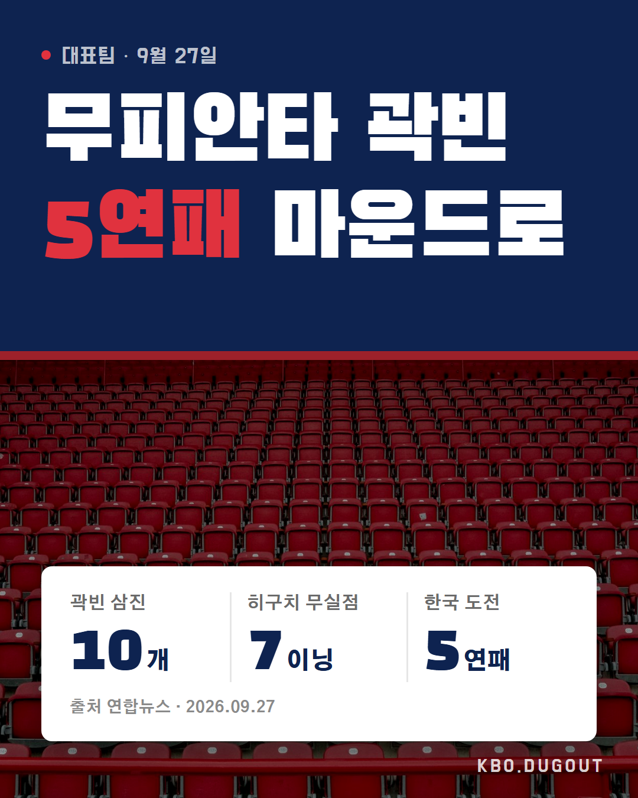

히구치 하루 쉬고 또 나온다는데 이번엔 대표팀 타선이 초반에 뚫을 수 있을까??
QA 출처에 없는 이름
히구치 하루 쉬고 또 나온다는데 이번엔 대표팀 타선이 초반에 뚫을 수 있을까??
QA 출처에 없는 이름

대만전 무피안타 곽빈 다시 선발, 이번엔 타선이 히구치 뚫어주자 #KBO #프로야구 #야구 #곽빈 #두산베어스
QA 출처에 없는 이름
김하성 2년 만에 3루타 ㄷㄷ 근데 타율은 아직 0.118… 이거 반등 신호 맞냐??
QA 없음